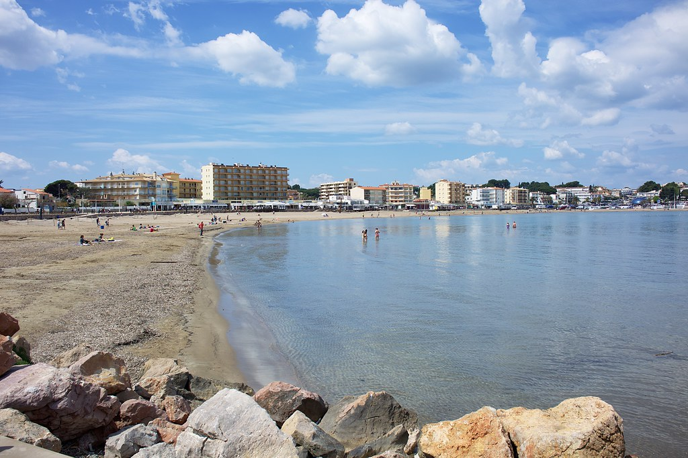

En un entorno rural, rodeado de naturaleza, se encuentra L'Escala, envuelto por montañas, valles, playas y parques naturales.
El termino municipal tiene una extensión de 16,4 km2 y una población de 10.000 habitantes.
Su economía se basa en la agricultura, la pesca y el turismo.
